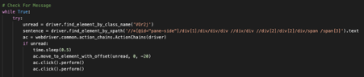
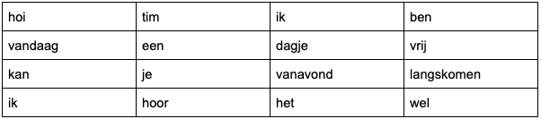
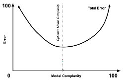
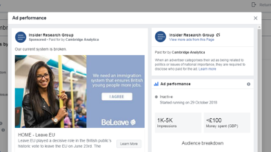

In dit hoofdstuk laten we zien op welke wijze kunstmatige intelligentie toegepast kan worden. In het eerste hoofdstuk is te vinden hoe een zelflerende chatbot is gemaakt. Vervolgens is te lezen hoe dankzij kunstmatige intelligentie de Amerikaanse verkiezingen in 2016 zijn beïnvloed.
In dit project ga ik (Jens) aan de slag met Python, WhatsApp en veel codetaal. Ik wil proberen om een functionerende en zelflerende chatbot te maken die reageert op de invoer van de gebruikers. Als eerst begin ik met mijn onderzoeksvraag, daarna zal kan u de achtergrondinformatie van zowel WhatsApp als Python lezen. Daarmee is het makkelijker om een beter plaatje te krijgen van het geheel. Vervolgens ga ik uitleggen hoe de chatbot is gemaakt en geef ik mijn uiteindelijke conclusie.
Is het mogelijk om een chatbot te ontwikkelen die niet te onderscheiden is van een mens?
WhatsApp is een gratis platform die voor het eerst verscheen op de mobiel. Met WhatsApp kan je gemakkelijk vrienden en familie bereiken door middel van chatberichten. WhatsApp is opgericht door Jan Koum en Brian Acton en bestaat sinds 2009. Sinds 2015 bestaat er ook een webversie van de populaire chatdienst. Elke dag zitten er meer dan 1 miljard mensen op WhatsApp.
Python is een programmeertaal ontwikkelt door de Nederlander Guido van Rossum.
Python bestaat al sinds 1991.
Computers communiceren alleen in binaire getallen.
Een programmeertaal zoals Python zorgt ervoor dat de code die een mens schrijft omgezet wordt in binaire getallen.
Een programmeertaal werkt dus als een vertaler. Zonder code weet een computer niet wat hij moet doen.
Veel mensen maken modules voor de programmeertaal Python. Zonder deze modules is Python niks.
De modules zijn gebaseerd op Python en zorgen dat de handleiding vol komt te staan met instructies.
Zo kan men in de code deze instructies aanwijzen en doorgeven aan de computer in binaire getallen.
De chatbot maakt gebruik van de webversie van WhatsApp. De chatbot werkt door middel van deep learning, een subgroep van machine learning. Het script krijgt invoer van de gebruiker. Haalt het door neurale netwerken heen en geeft uiteindelijk het juiste antwoord terug.
Aan de hand van screenshots laten we zien hoe de chatbot is gemaakt. De chatbot is gemaakt door middel van Python.

In dit stukje code checkt het script of er een berichtje binnenkomt. Als er een bericht binnenkomt dan klikt het script op dat bericht.
Pre-processing houdt in dat het script de zin grammaticaal snapt. Daarvoor hebben we de Python module NLTK gebruikt. NLTK staat voor Natural Language Toolkit en zorgt voor het volgende:
- Stemming;
- Tokenization;
- Lemmatization.
Bij stemming gebeurt het volgende:
De invoer van de gebruiker wordt omgezet van dit:
Hoi Tim, ik ben vandaag een dagje vrij! Kan je vanavond langskomen? Ik hoor het wel…
Naar:
hoi tim ik ben vandaag een dagje vrij kan je vanavond langskomen ik hoor het wel
De leestekens uit de zin worden verwijdert. Die heeft het script niet nodig. Mensen gebruiken leestekens om hun gevoelens aan te geven. Een vraagteken staat voor een vraag. Terwijl uitroeptekens vaak gebruikt worden voor een urgente vraag.
Vervolgens komen we bij tokenization aan:
Tokenizing houdt in dat de zin wordt opgesplitst.

Zo kan het script elk woord apart door kunstmatige intelligentie laten controleren en op een eindantwoord uitkomen.
Daarna volgt het proces van Lemmatization:
Wij als mens spreken in veel verschillende woorden.
Tijdens dat we praten hoeven we daar helemaal niet over na te denken.
Hoi en hallo betekent in ons brein hetzelfde.
Het script lost dat op door lemmatizing.
Neem deze 3 woorden als voorbeeld. Ze betekenen allemaal hetzelfde alleen staan in een andere tijd. Het script snapt dat niet.
- Gelopen;
- Lopend;
- Lopen;
- Te voet;
- Wandelen.
Daarom worden de woorden omgezet.
- Gelopen wordt lopen;
- Lopend wordt lopen;
- Lopen wordt lopen;
- Te voet staat gelijk aan lopen;
- Wandelen staat gelijk aan lopen.
Deze drie processen zorgen ervoor dat het script alle woorden van de invoer van de gebruiker kan vergelijken met de trefwoorden in het intents.json bestand.
Maar ook dat het script weet dat sommige woorden dezelfde definitie hebben.
De chatbot heeft een database aan trefwoorden en antwoorden. Deze heb ik zelf gemaakt en is dus beperkt. Toch hoeft niet elk trefwoord er in te staan om een goed antwoord van de chatbot te krijgen. Dit komt omdat je de bot kan trainen. De mens moet handelingen ook vaak herhalen voordat hij of zij het echt snapt. Bij de chatbot noemen we die herhalingen epochs. Tijdens het leren haalt het script de woorden door een neuraal netwerk heen en creëert een model. Het werkt vaak averechts om het leerproces van de bot vaak te herhalen. Het optimum punt van het leerproces ligt vaak in het midden. Zoals te zien is in de afbeelding. Als het script klaar is met trainen slaat het alle data op in een bestand. De bot kan die vervolgens raadplegen om aan de hand daarvan het juiste antwoord te geven.
De grote vraag is natuurlijk of deze kunstmatige intelligente chatbot de turing test doorstaat. Dat is niet het geval. Een chatbot kan worden ingedeelt in 2 verschillende vlakken.
- Generative;
- Retrieval-based.
Deze chatbot is een voorbeeld van retrieval-based. De bot heeft zijn trefwoorden en antwoorden al. Het script pakt het beste antwoord uit het databestand die is gemaakt tijdens het leerproces.
Daardoor kan de chatbot niet op elke invoer een goed antwoord geven omdat het gelimiteerd is door de ontwikkelaar.
Een generative chatbot gaat nog een stapje verder. Het script is niet gelimiteerd door de ontwikkelaar opgegeven trefwoorden en antwoorden. Deze chatbot leert helemaal uit zichzelf. Een vorm van onder andere unsupervised learning. Hoe meer data in bezit, hoe beter de bot antwoord geeft.
Klik hier voor de YouTube video.
Zoals te zien is in de video verliep de communicatie met de chatbot niet altijd even soepel.
Dat kwam waarschijnlijk door het draaien van het script en het opnemen tegelijk.
Aan de linkerkant is de webversie van de chatbot te zien.
Aan de rechterkant ziet u mijn telefoon die berichten stuurt naar de webversie van WhatsApp.
Vervolgens reageert de chatbot op mijn berichten met behulp van kunstmatige intelligentie.
Ik heb voor dit project een apart nummer aangeschaft zodat ook jullie de chatbot kunnen uitproberen.
Helaas kan ik de chatbot niet altijd aan hebben staan.
Neem even contact met mij op via het contactformulier op de website.
Dan zet ik de chatbot aan! Ik stuur als reactie op de mail direct het telefoonnummer mee.
SCL Group (Strategic Communication Laboratories) was een Brits-Amerikaans data bedrijf. De SCL Groep was actief onder de naam Cambridge Analytica. Het bedrijf werd in 2013 opgericht door Alexander Nix. Het bedrijf kwam pas echt van de grond af toen miljardair Robert Mercer een steun donatie van een paar miljoenen had bijgedragen. Steve Bannon werd vervolgens de campagneleider van Donald Trump. Uiteindelijk heeft Steve Bannon gebruik gemaakt van Cambridge Analytica en heeft Trump hiermee waarschijnlijk de presidentscampagne verkiezingen gewonnen met behulp van vele gebruikersdata en kunstmatige intelligentie.
Cambridge Analytica maakte gebruik van vele gebruikersdata, zonder toestemming van de gebruiker, om daarmee een identiteit te schetsen van personen. Die data was afkomstig van het advertentie-ecosysteem van Facebook. Voorafgaand werden er tiental duizenden advertenties gericht op verschillende doelgroepen. Uiteindelijk werden de resultaten van die advertenties onderzocht via intensief onderzoek, gegevensmodellering en verschillende algoritmen. Met die gegevens werd een algoritme geoptimaliseerd die vervolgens doelgerichte advertenties verstuurde naar specifieke gebruikers op het internet. Vele advertenties werden soms wel meer dan 1 miljard keer bekeken. Zulke advertenties kunnen worden gezien als propaganda en gingen echt op de psychologie achter het menselijk brein in. Zo bleek uit een gelekt bestand van een voormalig medewerker van Cambridge Analytica. Uit een verklaring van CEO Alexander Nix bleek dat bijna elke uitspraak van Donald Trump gebaseerd was op data verwerkt door algoritmes.
Data-mining en data-analyse zijn 2 kanten van dezelfde munt.
Datamining is het analyseren van data, en vervolgens zoeken naar de statistische verbanden tussen die data.
Bijvoorbeeld data over wie welke site opzoekt en waarom.
Data-analyse verwerkt vervolgens de gericht gezochte informatie en kan daar van alles mee doen.
Maar bij Cambridge Analytica hielden ze de data van vele facebook gebruikers voor hunzelf om vervolgens gerichte advertenties te tonen.
Aan de hand van de algoritmes die het neurale netwerk maakt, en de machine learning kan je door data-analyse, databronnen analyseren.
Er zijn veel verschillende algoritmes in data mining. Cambridge Analytica maakte gebruik van data-analyse.
Maar er zijn nog veel meer vormen, zoals: classificatie, indeling, regressie, associatie, afwijkingen detectie, en het samenvatten van deze informatie.
- Classificatie: bij classificatie is het geval dat wanneer nieuwe data binnenkomt, dit algoritme deze informatie bekijkt en dan gelijk de informatie op de juiste plek in de dataset opneemt. Een dataset is de bron van informatie voor de dataminer;
- Indeling: dit algoritme zorgt ervoor dat er bij bestaande data verschillende groepen worden aangemaakt. Dit kan dit algoritme door het herkennen van verschillende patronen en structuren;
- Regressie: dit wordt vooral gebruikt om voorspellingen te maken, omdat je dit verbanden zoekt tussen data die je hebt en data die nog niet bestaat maar, die mogelijk zou kunnen optreden door de data die je al hebt;
- Associatie: het associatie algoritme zoekt een verband tussen twee willekeurige datasets. Hierbij kan je je voorstellen dat jij en iemand anders hetzelfde filmpje kijken op youtube, en daarna de volgende sites die jullie opzoeken. Hier probeert dit algoritme een verband tussen te leggen;
- Afwijkingen detectie: dit algoritme spreekt al eigenlijk voor zichzelf. Deze detecteert de ongewone informatie in de datasets. Dit zijn dus de gegevens die niet echt een logisch structuur formen met de andere gegevens;
- Samenvatten: dit is eigenlijk het algoritme dat het voor ons makkelijk maakt de informatie te overzien. Je krijgt een helder weergave van de dataset. Hier hoort ook vaak datavisualisatie bij, dat wilt dus eigenlijk zeggen dat er plaatjes bij zijn. Google en andere zoekmachines maken hier veel gebruik van;
Cambridge analytica maakte gebruikt van data-analyse. Dit process zorgt ervoor dat nutteloze data omgezet wordt tot zinvolle informatie.
In 2014 is er een Quiz rondgegaan die uit meerdere multiple choice vragen bestond.
Je ongeveer 2-5$ als je de quiz helemaal had ingevuld en ingeleverd. Dan zou je zeggen dat je daardoor profiteert, maar dat was niet helemaal zo.
Om de quiz te maken moest je inloggen met facebook. En dat is dus precies ook waar het de verkeerde kant op ging.
De quizzen waren gestuurd door een academie student die waarvan de studie samenwerking had met Cambridge Analytica.
Deze student maakte gebruik van facebook data om zijn onderzoek op grote schaal uit te testen.
Omdat je met facebook moet inloggen om zijn quiz te maken kon hij al achter veel informatie komen.
Je verjaardag, locatie, vrienden en het belangrijkste natuurlijk de dingen die je hebt geliked.
Hij heeft dus deze Facebook likes gemengd met je quiz uitslag om een persoonlijk profiel ervan te maken.
Dat was nog niet het ergste daarentegen.
Ook al de persoonlijke data van je facebook vrienden werd geanalyseerd en er werden ongeveer gelijke profielen van gemaakt.
Zo hebben er maar liefst 270 duizend mensen in Amerika de quiz afgenomen. Toch was Cambridge Analytica in bezit van meer dan 87 miljoen gebruikersprofielen.
Vervolgens werd deze data in 2016 tijdens de president campagnes gebruikt om niet alleen gerichte advertenties te sturen naar de mensen in Amerika,
maar ook political messaging. Dat wil zeggen dat er dus een advertentie direct werd gestuurd om een politieke kandidaat te steunen.
In dit geval dus Donald Trump.
Ook heeft cambridge analytica invloed gehad op de Brexit van Engeland.
Ook bij deze politieke gebeurtenis werden er advertenties gestuurd naar vele mensen in Groot-Brittannië.
Hieronder een voorbeeld van een advertentie door het advertentie ecosysteem van Facebook.
